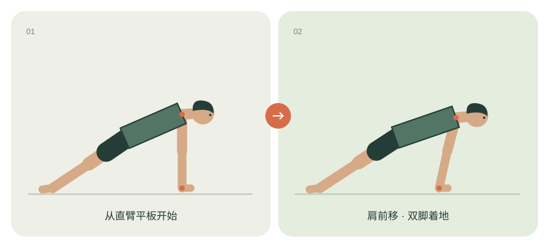
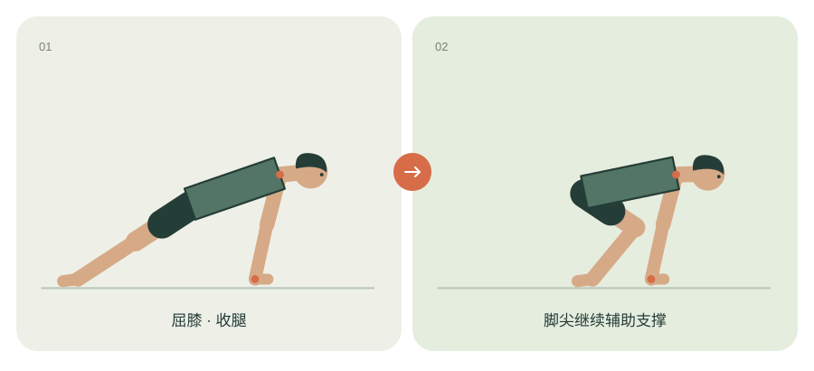
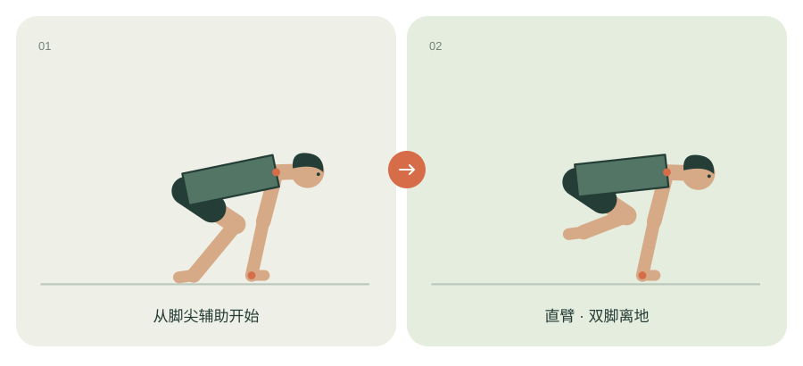

俄挺入门指南：从直臂冲肩到团身俄挺
俄挺（Planche）是用双手支撑、把双脚抬离地面的体操力量动作。这个 30 天训练计划先建立直臂支撑和肩部前移能力，再练习团身重心控制。30 天用于练习和复测，不保证能做完整并腿俄挺。
三种入门阶段有什么区别？
-

直臂冲肩（Planche Lean）
手肘伸直并主动推地，肩缓慢移到手腕前方，双脚仍着地。需要降阶时缩小前倾幅度。
-

脚尖辅助团身（Assisted Tuck）
屈膝收腿，脚尖继续提供支撑。先减少脚尖承重，不靠跳起或屈肘换取离地。
-

团身俄挺（Tuck Planche）
收膝靠近胸部，直臂推地使双脚缓慢离地。失去控制就落脚，也可以回到脚尖辅助动作。
日历不会自动升阶。只有在动作质量稳定、训练和次日恢复良好时，才尝试下一阶段。时间、次数和前倾幅度，每次只增加一个变量。
一周练几次？
常规周是 5 个训练日、2 个休息日，不是连续五天做大强度上肢训练：专项 → 下肢核心 → 基础推力 → 休息 → 专项 → 轻辅助 → 休息。第 22 天主动减量，第 29 天轻练，第 30 天复测。
第 1 天训练示例：直臂冲肩阶段
以下是工具的默认起点示例，按能完成标准俯卧撑约 20 次、至少 2 组的基础编排。先热身并确认自己的支撑能力；动作变形就结束这一组。不要把次数当作必须完成的目标。关节疼痛时停止对应动作；持续或反复疼痛请寻求专业评估。
| 动作 | 组数 × 每组目标 |
|---|---|
| 直臂冲肩 | 4 组 × 8 秒 |
| 小幅冲肩俯卧撑 | 3 组 × 5 次 |
| 肩胛俯卧撑 | 2 组 × 10 次 |
| 屈膝仰卧收腹保持 | 3 组 × 20 秒 |
怎么记录训练？
打开训练记录工具，在日历中选一天，记录每组合格的次数或时间，并在次日核对恢复情况。页面可计时，也支持导出 JSON。记录只保存在当前浏览器，不上传、不跨设备同步。